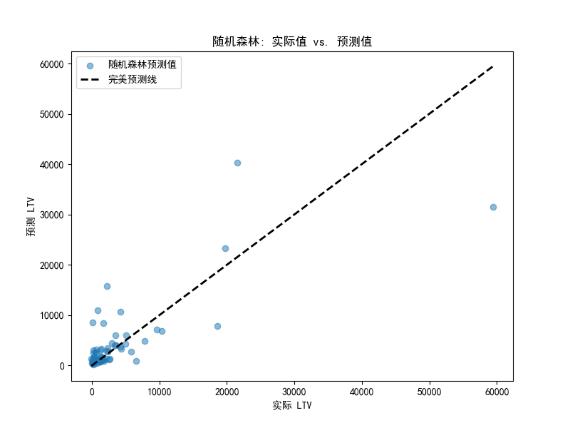
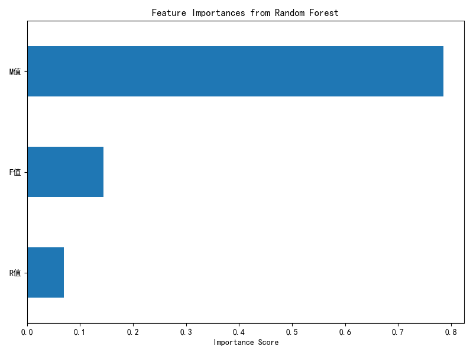

随机森林 (Random Forest) LTV 预测分析报告
1. 分析概述
本次分析使用 随机森林 (Random Forest) 算法替代原有的线性回归模型，对客户生命周期价值 (LTV) 进行预测。目的是评估随机森林在该任务上的性能，并与线性回归模型进行比较。
2. 模型性能评估
2.1 R² 分数比较
| 模型 |
训练集 R² |
测试集 R² |
| 线性回归 (原模型) |
0.6187 |
0.4778 |
| 随机森林 (新模型) |
0.9169 |
0.5899 |
2.2 性能分析
- 绝对性能: 随机森林在测试集上的 R² 分数为 0.5899。
- 相对性能提升: 与原线性回归模型的测试集 R² 分数 (0.4778) 相比，随机森林带来了 0.1121 的 R² 分数提升。这表明随机森林模型在解释 LTV 变异性方面有显著改进。
- 过拟合风险: 随机森林的训练集 R² (0.9169) 远高于测试集 R² (0.5899)，表明模型可能存在一定程度的过拟合。尽管如此，其测试集性能仍然优于线性回归。
3. 预测效果可视化
下图展示了随机森林模型在测试集上的预测值与实际值的散点图。点越靠近对角线，预测越准确。

4. 特征重要性分析
随机森林模型提供了一个非常有价值的洞察：各输入特征对预测结果的相对重要性。
| 特征 |
重要性分数 |
| M值 (消费金额) |
0.7853 |
| F值 (消费频率) |
0.1447 |
| R值 (最近消费距今时间) |
0.0700 |
4.1 结论
- M值 (消费金额) 是预测年度 LTV 最重要的特征，其重要性远超其他两个特征。这符合直观认知，即历史消费总额是未来消费潜力的强指标。
- F值 (消费频率) 是第二重要的特征，表明消费活跃度也是一个关键因素。
- R值 (最近消费距今时间) 的重要性相对较低，但它仍然提供了关于客户流失风险的有用信息。
5. 特征重要性图
以下条形图直观地展示了各特征的重要性排序。

6. 总结与后续步骤
- 结论: 使用随机森林算法成功地提升了 LTV 预测的性能。R² 分数的提升证明了该模型在处理当前 RFM 特征集时的有效性。
- 后续步骤:
- 超参数调优: 对
RandomForestRegressor 的参数（如 n_estimators, max_depth, min_samples_split 等）进行网格搜索或随机搜索，以进一步优化模型性能并减少过拟合。
- 特征工程: 根据
model_improvement_plan.md 和 rf_analysis_plan.md 中的建议，创建新的衍生特征（如平均订单价值 AOV、消费频率密度等），并重新训练模型，观察性能是否能进一步提升。
- 尝试其他模型: 在特征工程的基础上，可以尝试其他强大的集成学习模型，如 XGBoost 或 LightGBM，比较它们的性能。
总而言之，随机森林是一个非常适合此 LTV 预测任务的模型，显著优于简单的线性回归，并提供了对特征贡献度的清晰理解。